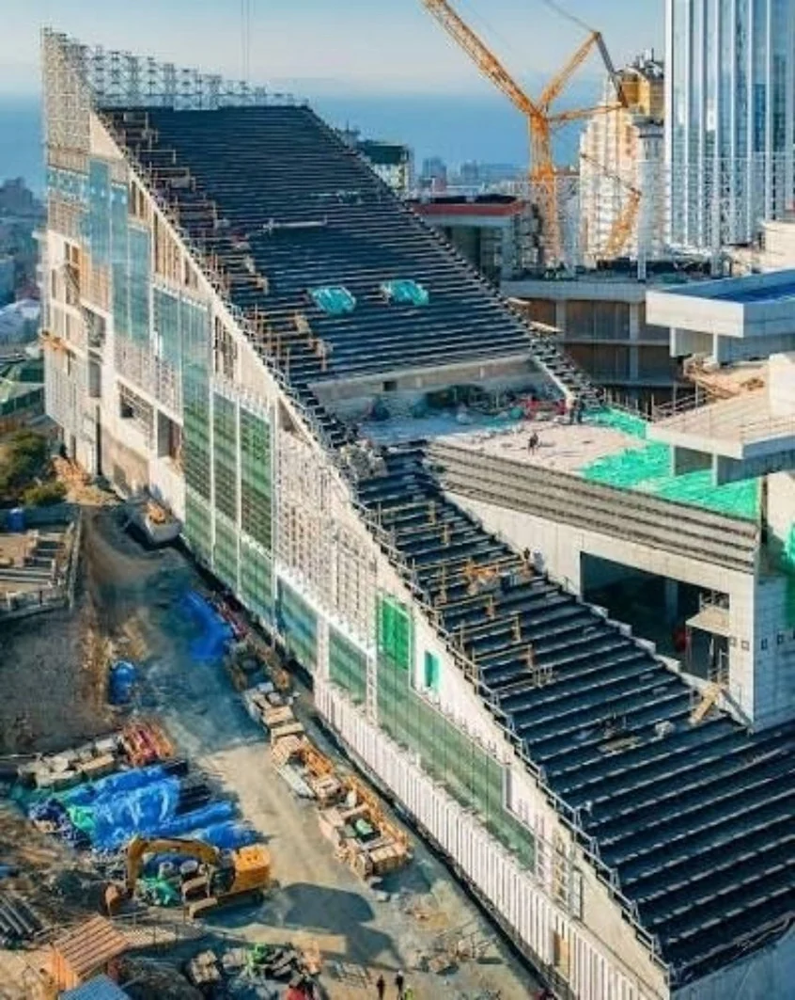

Фактические размеры
Результаты согласованных замеров и геодезического сопровождения.
Компетенции
Связываем проектные решения с фактической геометрией площадки. Уточняем размеры, прорабатываем конструктивные решения и готовим технические материалы для согласованного этапа.

Состав направления
Изучаем имеющиеся архитектурные и конструктивные чертежи.
Уточняем задачу замеров и доступ к нужным участкам объекта.
Прорабатываем конструктивные решения с учётом исходных данных.
Согласуем состав технических материалов и следующие этапы работ.
Результат сотрудничества
Результаты согласованных замеров и геодезического сопровождения.
Проработка вопросов, которые влияют на изготовление и монтаж.
Состав, детализацию и формат документации определяем в задании.
Площадка и детали
Каркас, монтажные участки и сложная геометрия. Состав участия команды указан в кейсе каждого объекта.

Каркас ресторана на этапе строительства. В кейсе — весь путь до готового здания.
Ресторан в японском стиле Фото: портфолио компании
Бригада на участке сборки каркаса ресторана. Фотография из портфолио компании.
Ресторан в японском стиле Фото: портфолио компанииДругие направления
С чего начать
Выберите ситуацию — расскажем о подходе и подготовке.